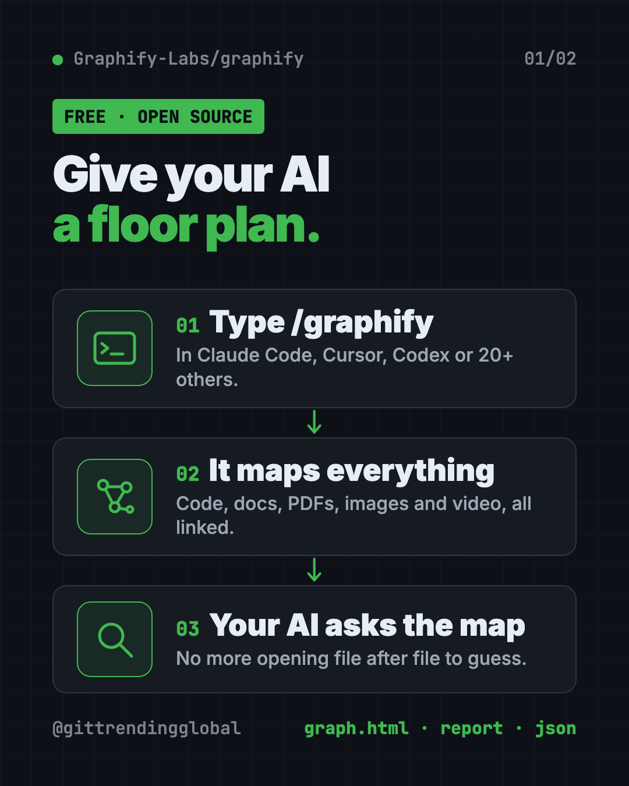
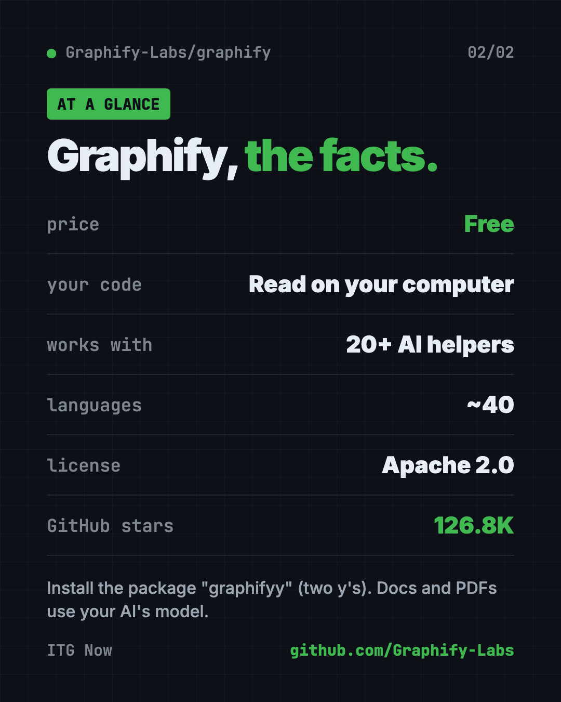

Graphify Knowledge Graph: Free Project Map for AI Helpers
- Published 15 Oct 2026
- Updated 16 Oct 2026
- 8 min read
- License Apache-2.0
- By the ITG Now team
A graphify knowledge graph is a clickable map of your whole project. You type /graphify in your AI coding helper, and it maps how your code, docs, PDFs, images and videos connect.
Then your AI asks the map instead of opening file after file. This guide explains what that means, who it helps, and how to set it up in about a minute.
Key takeaways
- One command, one map. Type
/graphify .and you get a browser map, a short report and a saved data file. - Free and open source. Apache 2.0 license, about 126.8K GitHub stars.
- Code stays on your computer. The README says code is read locally, with no AI model and nothing sent out.
- Works with 20+ AI helpers. Claude Code, Cursor, Codex, Gemini CLI, GitHub Copilot and more.
- There's a paid cloud version too. You don't need it. The open-source tool works on its own.
What is Graphify?
Ask an AI coding helper a question about a big project and watch what happens. It opens a file. Then another. And another. It searches, reads more, then gives an answer that's half right.
The AI has no big picture. It's like finding a room in a huge building with no floor plan.
Graphify draws the floor plan. It calls it a knowledge graph, which is a web of things and the links between them. Each dot is an idea, like a function or a document. Each line says how two dots connect.
Most AI tools charge by the token (a small chunk of text). Less digging means fewer tokens read.
What do you get from a Graphify knowledge graph?
After one run, Graphify saves three files in a folder called graphify-out:
| File | What it is |
|---|---|
graph.html |
A map you open in any browser. Click, filter and search. |
GRAPH_REPORT.md |
The highlights: key ideas, surprising links and suggested questions. |
graph.json |
The full map, saved so your AI can use it without re-reading your files. |
The map also groups related parts into "communities," shown in different colors. And it finds "god nodes," the busiest hubs everything flows through.
Each link is tagged too. EXTRACTED means it was written plainly in your files. INFERRED means Graphify worked it out. So you know what to trust.

How to use Graphify (real examples)
- Learn a new project fast. Joined a team? Run
/graphify .and opengraph.html. You'll see the main parts and how they link before reading any code. - Ask a plain question. Try
/graphify query "what connects auth to the database?"It returns just the slice of the map that answers it. - Trace a connection.
/graphify path "UserService" "DatabasePool"shows the shortest route between two things, hop by hop. - Add a research paper or video.
/graphify addcan fetch a paper from a link or transcribe a YouTube video into the same map. - Keep it fresh.
graphify hook installrebuilds the map each time you save a change with Git.
💡 Tip: Open
GRAPH_REPORT.mdfirst. Its suggested questions are a great place to start if you don't know what to ask.
Who should use Graphify?
- Developers on big or unfamiliar code projects.
- New team members who need to learn how things fit together.
- Tech leads who want a bird's-eye view of a system.
- Students and researchers linking papers, notes and code in one place.
- Anyone using an AI coding helper who's tired of it guessing.
Is Graphify free?
Yes. The open-source tool is free under the Apache 2.0 license. Mapping code costs nothing in AI fees, because the README says code is read without any AI model.
Docs, PDFs and images are different. Those go through your AI helper's model, or an API key you set, for a meaning pass. That can use paid tokens.
There's also Graphify Cloud, a paid always-on version with a free 14-day trial. It adds things like multi-repo maps and links to Jira and Sentry. You don't need it to use the free tool.
How to install Graphify
You need Python 3.10 or newer, plus uv or pipx (free tools that install Python apps).
No uv yet? On a Mac with Homebrew, copy and paste this:
brew install python@3.12 uv
On Windows, copy and paste this:
winget install astral-sh.uv
Now install Graphify. Copy and paste this:
uv tool install graphifyy
graphify install
The second line finds your AI helper and adds the /graphify skill to it. Then open your AI helper and type:
/graphify .
⚠️ Heads up: The official package is
graphifyy, with two y's. The README warns that other "graphify" packages are not linked to this project.
Want your AI to check the map every time, without being asked? Copy and paste this (swap claude for codex if you use Codex):
graphify claude install
To remove it from everything later, copy and paste this:
graphify uninstall

Let Claude or Codex set it up for you
Claude Code and OpenAI Codex are AI helpers that can run setup steps on your computer. You paste a request, they do the work, and you approve each step.
Copy and paste this:
Please install Graphify from github.com/Graphify-Labs/graphify.
1. Check that I have Python 3.10+ and uv. Install uv if it's missing.
2. Install the official package "graphifyy" (two y's) and run "graphify install".
3. Explain each step in plain words before you run it.
4. Run /graphify on this folder and open graph.html for me.
5. Summarize GRAPH_REPORT.md in 5 simple bullets.
Then try asking:
Use the graphify map to explain how this project is organized, like I'm new here.
/graphify query "where does a user's login get checked?"
Map only my code, skip the PDFs, so nothing gets sent to an AI model.
Is my code private with Graphify?
Mostly yes, and the README spells it out:
- Code is read on your computer. Nothing leaves.
- Video and audio are transcribed on your computer too.
- Docs, PDFs and images go to your AI helper's model for a meaning pass.
- No telemetry. No usage tracking or analytics.
- Query log. Your questions are saved in a log file on your own computer. You can turn that off.
Add --code-only when you run it on a mixed folder, and only the code gets mapped.
⚠️ Heads up: One AI provider in the list, Kimi, routes to servers in China, the README says. If that matters for your work, pick a different provider or a fully local one like Ollama.
Graphify at a glance
| Price | Free (paid cloud version optional) |
| Works offline | Yes for code; docs and images need an AI model |
| Platforms | Mac, Windows, Linux |
| License | Apache 2.0 |
| Languages | About 40 programming languages |
| Works with | Claude Code, Cursor, Codex, Gemini CLI, Copilot and 20+ more |
| Best for | Anyone whose AI helper keeps getting lost in a big project |
Our take
Graphify gives your AI helper a floor plan. That's a simple idea, and the clickable map is useful even for people who never touch the code.
What we like:
- Two commands to install, one to run.
- Code mapping is free, local and needs no AI key.
- Labels show what was read directly versus guessed.
- Works with 20+ AI coding helpers.
- Clear privacy notes, with no tracking.
What to watch for:
- Docs, PDFs and images use AI tokens, which may cost money.
- The README pushes the paid cloud version near the top. Don't confuse it with the free tool.
- You need to rebuild the map when things change, unless you add the Git hook.
- Watch the package name: two y's.
Want more tools that help your AI understand a project? See CodeGraph and Understand Anything. Trying to cut AI costs too? Read our Headroom guide.
FAQ
What does Graphify do?
Graphify maps your project into a knowledge graph: a web of your code, docs and media and how they connect. Your AI helper then asks the map instead of reading every file.
Is Graphify free?
Yes. The open-source tool is free under the Apache 2.0 license. A paid Graphify Cloud version exists, but you don't need it.
Does Graphify send my code to the cloud?
No. The README says code is read on your computer and nothing leaves. Docs, PDFs and images do go to your AI helper's model.
Which AI helpers work with Graphify?
More than 20, including Claude Code, Cursor, Codex, Gemini CLI, GitHub Copilot, Aider and Google Antigravity.
What is the graphify knowledge graph file?
It's graph.json, saved in the graphify-out folder. It holds the full map, so your AI can use it any time without re-reading your files.
Why is the package called graphifyy?
That's the official name on PyPI, with two y's. The command you type is still graphify.
Get Graphify: github.com/Graphify-Labs/graphify
More free video tools
- HyperFrames HyperFrames is a free tool that makes AI video from HTML. Your AI agent writes a web page, and HyperFrames renders it into an MP4 video.
- ArtCraft ArtCraft is a free AI video and image studio. Build your scene in 2D or 3D first, then let an AI model make the image or video. Mac and Windows.
- Recordly Recordly is a free screen recorder and editor for Mac, Windows and Linux. It adds auto-zooms, a smooth cursor, webcam bubbles and styled backgrounds.
- Vorssaint Utils Vorssaint Utils is a free Mac utility app. Per-app volume, window snapping, clipboard history, a system monitor and an uninstaller behind one menu bar icon.
- OpenMontage OpenMontage is a free AI video maker. Describe a video in plain words and your AI helper researches, scripts, narrates, edits and renders it for you.
- Paperclip Paperclip is a free, self-hosted app to manage AI agents like a company, with goals, an org chart, budgets, approvals and one dashboard for all the work.
Latest AI news
- Meta gives away its big Muse Spark AI for free
- Google launches TorchTPU to rival Nvidia
- ChatGPT adds PIN-locked chats
- NVIDIA releases Cosmos3-H-Dreams surgery simulator
Keep reading

net-merge: Combine Wi-Fi and Phone Internet, Free
net-merge is a free app to use two internet connections at once, like Wi-Fi plus a phone hotspot, on Windows, Mac and Linux. No account or VPN.

REA: Reverse Engineer Anything With Your AI Agent
REA (Reverse Engineer Anything) lets an AI agent look inside an app and explain how a feature works, with proof. What it does, what it misses, and the risks.

DBX: Free Database Client for 100+ Databases, With AI
DBX is a free database client that opens 100+ kinds of databases in a 25 MB app. Its AI helper turns plain English into database queries for you.